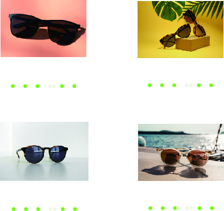
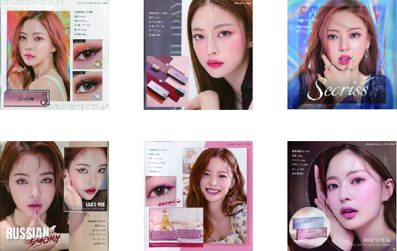
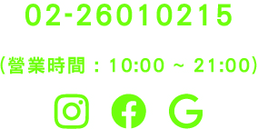

Top
眼鏡レンズは初はクリスタルで作られていましたが、
後にガラスで作られたものもあります。
一部のファイバー
レンズはガラス レンズよりも紫外線を遮し、目をより良く
保護します。
眼鏡レンズは当初はクリスタルで作られていましたが、後にガラスで作られたものもあります。
一部のファイバー レンズはガラス レンズよりも紫外線を遮断し、
目をより良く保護します。プラスチックまたはファイバーのレンズを傷防止フィルムでコーティングすると、
レンズにガラスレンズと同じ耐傷性を持たせることができます。
防水コーティングや無反射コーティングなどのさまざまなコーティングは、
着用者に利便性と優れた視覚効果をもたらします。
防水コーティングや無反射コーティングなどのさまざまなコーティングは、
着用者に利便性と優れた視覚効果をもたらします。
目をより良く保護します。
プラスチックまたはファイバーのレンズを傷防止フィルムでコーティングすると、
レンズにガラスレンズと同じ耐傷性を持たせることができます。
店內氛圍佳，今日播放的是來自台灣獨立樂團的精選九張專輯。
メガネはそれぞれデザインが異なるため、メガネのサイズ情報が必ずしも同じ場所にあるとは限りません。
メガネの国際標準マーキング方法によれば、A□B-C-D=レンズ幅□ブリッジ幅（または2枚のレンズ間の距離）
-テンプルの長さ-レンズの高さになります。
フレームの内側、テンプル、または鼻梁に上記のサイズ番号の
いずれかが記載されているかどうかを確認してください。
上記のメガネのサイズ表示については、次の手順を参照してください。

メガネはそれぞれデザインが異なるため、メガネのサイズ情報が必ずしも同じ場所にあるとは限りません。
メガネの国際標準マーキング方法によれば、A□B-C-D=レンズ幅□ブリッジ幅（または2枚のレンズ間の距離）
-テンプルの長さ-レンズの高さになります。フレームの内側、テンプル、または鼻梁に上記のサイズ番号の
いずれかが記載されているかどうかを確認してください。
上記のメガネのサイズ表示については、次の手順を参照してください。

メガネの調子が悪くなったとき、メガネ屋の店主にどこで調整すればいいのかわかりませんか？
メガネの基本的な構造を理解していれば、修理中のコミュニケーションがより効果的になり、
修理中の誤解を減らすことができます。
